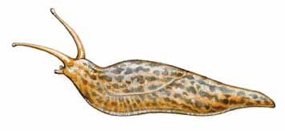

If slugs are a problem in your garden, consider using organic pestcontrol methods to dispose of them.
Remove their habitat by raking up your mulch in spring andcomposting it. Then, start your garden in open soil and wait untilearly summer to add a fresh blanket of mulch.
A few years ago, a U.S. Department of Agriculture scientist foundthat quackgrass contains a substance toxic to slugs. Since then,many backyard slug slayers have experimented with crabgrasscookies, which are made by mixing chopped, dried crabgrass leaveswith corn bran, cornstarch and beer. Then, the baits are placedbeneath plants, where the slugs eat them and die.
Another option is spraying coffee on plants that are plagued withslugs. Caffeine in any form ? including a few No-Doz tablets mixedwith water ? is a slug neurotoxin that will kill these unwantedpests.
When you're down to only a few slugs, you can fall back on thetraditional organic control, which is to trap them with beer. Putan inch or so of any beer in a cup, bury it in the garden nearly tothe rim and collect your drowned slugs in the morning. Or, put somebeer in plastic drink bottles and lay them on their sides in thegarden. The slugs will crawl in and drown. Dump them out and startover again every few days.
|
 |
|
|